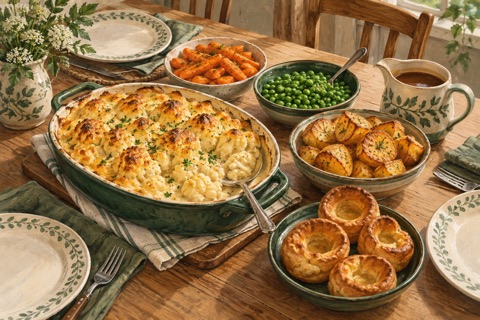

← Viikko 2 · Britannia
Sunnuntai / Päivällinen
Kukkakaaligratiini sunnuntain lisukkeilla
Kukkakaalia juustokastikkeessa, paahdettuja perunoita, Yorkshire-vanukkaita, kasviksia ja sipulikastiketta.

Ainekset
Määrät yhteensä 3 annokseen, myös lisukkeisiin ja mahdolliseen kasvisversioon. Vesi mainitaan valmistusohjeessa.
- Kukkakaali (puhdistettuna)800 g
- Peruna750 g
- Porkkana300 g
- Pakasteherneet200 g
- Cheddar180 g
- Maito550 ml
- Vehnäjauho145 g
- Voi60 g
- Kananmunat2 kpl
- Rypsiöljy (myös uppopaistoon)55 ml
- Sipuli200 g
- Kasvisliemi (valmiiksi laimennettu)400 ml valmista lientä
- Soijakastike10 ml
- Dijon-sinappi10 g
- Kuivattu timjami½ tl
- Suola¾ tl
- Mustapippuri½ tl
Valmistus
Lämpötilat ovat kiertoilmauunille. Käytä tavallisessa uunissa noin 20 °C korkeampaa lämpötilaa.
- Lämmitä kiertoilmauuni 200 asteeseen. Vatkaa 75 g jauhoa, kananmunat, 150 ml maitoa ja ¼ tl suolaa taikinaksi. Anna levätä. Kuori ja pilko perunat. Keitä 8 minuuttia, valuta ja ravistele pinnat karheiksi. Sekoita 30 ml öljyä joukkoon ja paahda 50–60 minuuttia. Käännä puolivälissä.
- Leikkaa kukkakaali kukinnoiksi. Höyrytä 6–8 minuuttia juuri ja juuri kypsäksi ja valuta huolellisesti. Sulata 40 g voita, lisää 40 g jauhoa ja sekoita minuutti. Lisää loput 400 ml maitoa vähitellen vispaten. Keitä hiljalleen paksuksi. Lisää sinappi, 140 g cheddaria ja puolet mustapippurista.
- Laita kukkakaali noin 20 cm:n uunivuokaan. Kaada juustokastike päälle ja lisää loppu juusto. Paista 25 minuuttia kullanruskeaksi. Nosta pois ja peitä löyhästi, jotta gratiini pysyy lämpimänä Yorkshire-vanukkaiden paistuessa. Perunat voivat jäädä uuniin rapeutumaan.
- Kuullota kastiketta varten viipaloituja sipuleita lopussa 20 g:ssa voita 15 minuuttia. Sekoita joukkoon loput 30 g jauhoa, sitten liemi, soijakastike, timjami sekä loput mustapippurista ja suolasta. Hauduta 10 minuuttia.
- Nosta uunin lämpö 210 asteeseen. Jaa loput 25 ml öljyä metallisen muffinivuoan kuuteen koloon ja kuumenna vuokaa 5 minuuttia. Kaada taikina tasaisesti kuumiin koloihin. Paista 20–25 minuuttia avaamatta luukkua, kunnes vanukkaat ovat kohonneet ja kullanruskeita.
- Höyrytä viipaloituja porkkanoita 8–10 minuuttia ja valmista herneet pakkauksen ohjeen mukaan. Tarjoa kaikki yhdessä. Yorkshire-vanukkaita tulee kaksi kullekin.
Kypsymisaika riippuu laitteista ja ainesten koosta. Kypsennysohjeet (englanniksi): tarkista ohjeessa mainittu sisälämpötila puhtaalla paistomittarilla.